Aerial Tactile Perching via an Anthropomorphic Hand with Embodied Soft Tactile Receptors

TL;DR: We let a drone perch by touch. A compliant, passively closing anthropomorphic hand carries nine binary tactile pads on its phalanges, and a state machine turns those contacts into pose corrections: the drone searches around a rough target estimate, exploits the first contact to localize the structure, aligns position and yaw from the contact pattern, and validates the grasp before switching off its motors. In simulation this perches with a success rate above 99 % for position errors up to 0.6 m, yaw errors up to 60°, target inclinations up to 45°, and target radii up to 0.15 m — where a feed-forward baseline without touch is confined to roughly 0.1 m. On hardware, all 26 flight trials perched successfully on cylindrical and T-bar targets despite deliberately corrupted pose estimates, and the perch itself consumes no energy at all.
Overview

Contributions
- A compliant anthropomorphic hand with soft tactile pads acting as sensorized phalanges, providing both environmental perception and passive adaptation to diverse structures — while closing passively, so that a perch costs no energy.
- An aerial tactile perching framework that continuously refines the MAV pose during the maneuver using embodied tactile feedback, starting from nothing but a rough estimate of where the target is.
- A tactile grasp-validation strategy that confirms secure attachment before the perch is finalized, enabling reliable, energy-free resting.
The Hand
An MAV spends nearly all of its energy on propulsion, so every gram of payload costs flight time. The hand therefore has to hold the vehicle's full weight with minimal actuation, minimal power, and minimal mass. Each of the three fingers is a chain of three rounded phalanges on revolute joints, following the human anatomical pattern in which the proximal segment is longest — a morphology that evolved in primates for suspensory and climbing behaviors. Torsional springs at each joint set the nominal posture to closed, so the grasp is held without any actuation; a single tendon per finger, routed to a lightweight spool, opens it against those springs. A soft silicone interior supplies friction and compliance at the contact surface.
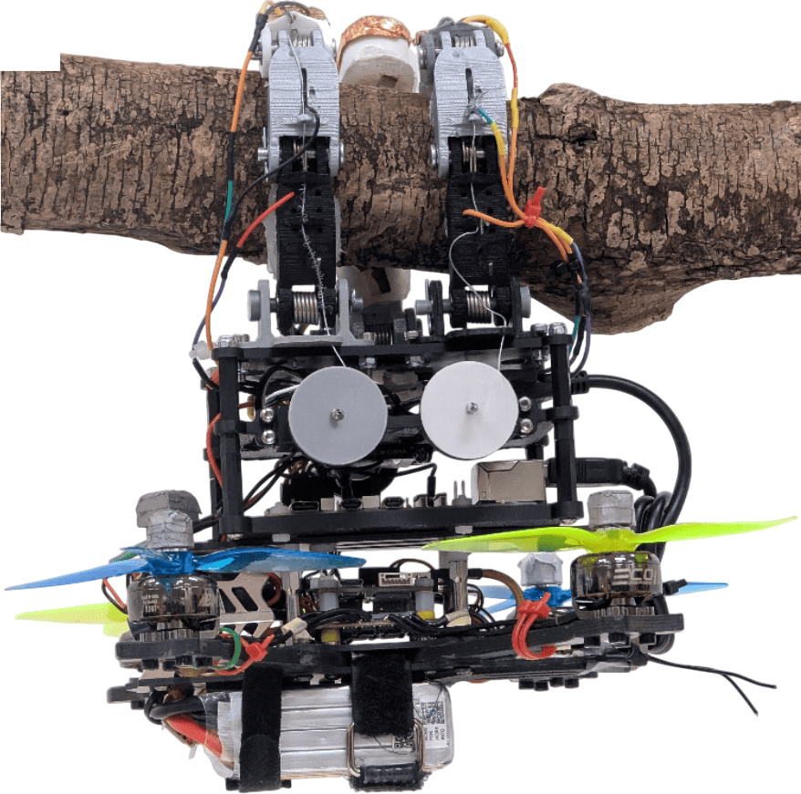
The prototype, perched
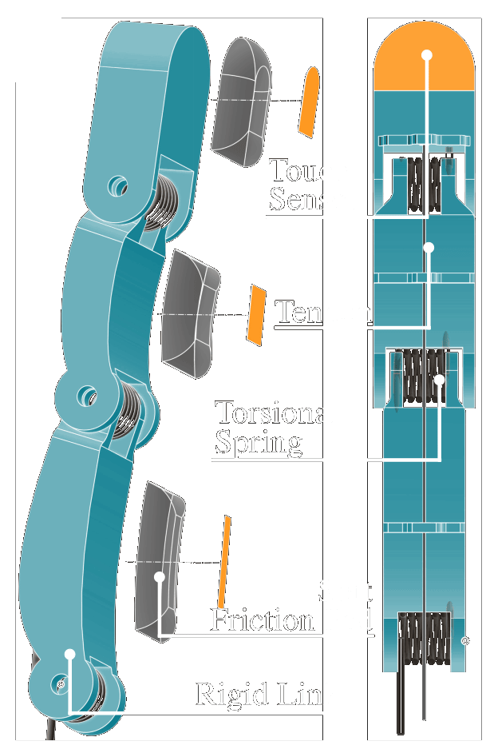
One finger, exploded
Left: the prototype, mounted on a 4-inch quad frame, hanging passively from a branch with its motors off. Three fingers in an antagonistic configuration carry nine tactile sensors \(\mathcal{C}_1\) to \(\mathcal{C}_9\), one at the center of each phalanx. Right: a single finger in exploded view and cross-section — rigid link, torsional spring, tendon, soft friction pad, and the touch sensor on top of it.
Interactive 3D Model
The tactile hand mounted on the quadrotor — rotate and zoom to explore the design. Torsional springs ensure passive closing, tendons actuate opening, and copper-foil capacitive pads detect contact. All design files are available in the project repository.
Sensing Touch
Each pad is a copper-foil patch cast just beneath the surface of an EcoFlex-30 semi-ellipsoid, glued onto a 3D-printed PLA backbone and wired to an MPR121 capacitive sensing controller at the base of the MAV. Touching a conductive object makes the object part of the capacitor and lowers the measured value; thresholding that deviation from the nominal capacitance yields a robust binary contact signal \(\mathcal{C}_i\) per phalanx. The distal phalanx carries foil on both its front and back, so contact is detected whether it occurs inside or outside the grasp.
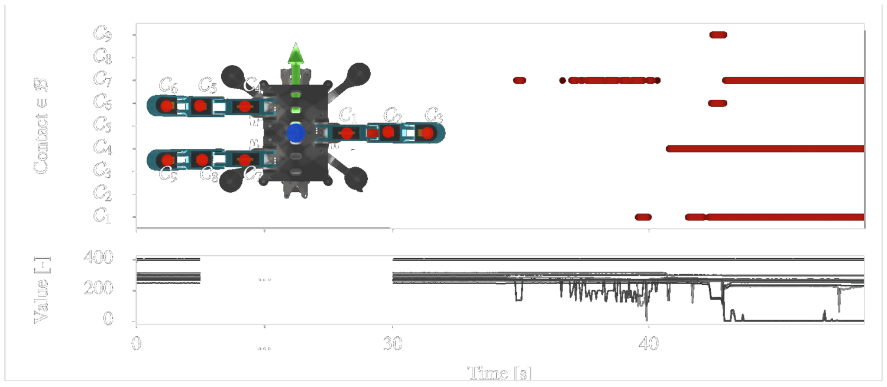
From raw capacitance to touch. The lower plot shows the raw values of all nine pads during a trial; thresholding their deviation from the nominal value gives the binary contact pattern above, which is what the state machine reacts to.
A binary contact signal is only useful if we know where on the hand it originated. Because the fingers are underactuated, that position depends on the current tendon tension. We recover it from the steady state of each finger: modeling finger \(j\) as a kinematic chain governed by the manipulator equations and assuming quasi-static motion (\(\ddot{\vect{\xi}}_j \approx 0\), \(\dot{\vect{\xi}}_j \approx 0\)) without external forces, its configuration satisfies $$ \begin{align} \vect{G}_{j,\mathcal{E}}(\vect{\xi}_j, {}^\mathcal{W}\vect{\Omega}_\mathcal{B}) + \vect{K}_{j,\mathcal{E}}(\vect{\xi}_j - \vect{\xi}_{j,0}) = \vect{A}_{j,\mathcal{E}}\,\tau_{j,\mathcal{E}}, \end{align} $$ with \(\vect{G}\) the gravity contribution, \(\vect{K}\) the joint stiffness, \(\vect{\xi}_{j,0}\) the nominal (closed) configuration, and \(\tau_{j,\mathcal{E}}\) the tendon tension. The gravity term makes this nonlinear, so we solve it numerically with Newton's method — a handful of iterations suffice. Forward kinematics on the resulting configuration then places every sensing pad in the body frame \(\mathcal{B}\), which turns an active sensor into a contact location the vehicle can steer towards.
Perching by Touch
The maneuver is orchestrated by a finite state machine that takes the MAV from a possibly wrong initial target estimate to a validated perch. It rests on three assumptions: A.1 the initial estimate lies in the vicinity of the true target pose, A.2 the target's characteristic diameter fits within the gripper, and A.3 the area around the estimate is free of obstacles other than the target itself.
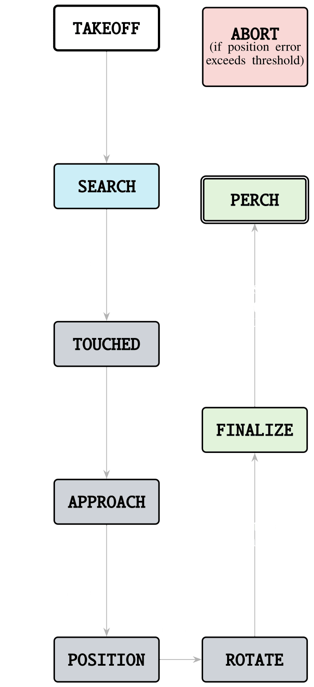
The state machine
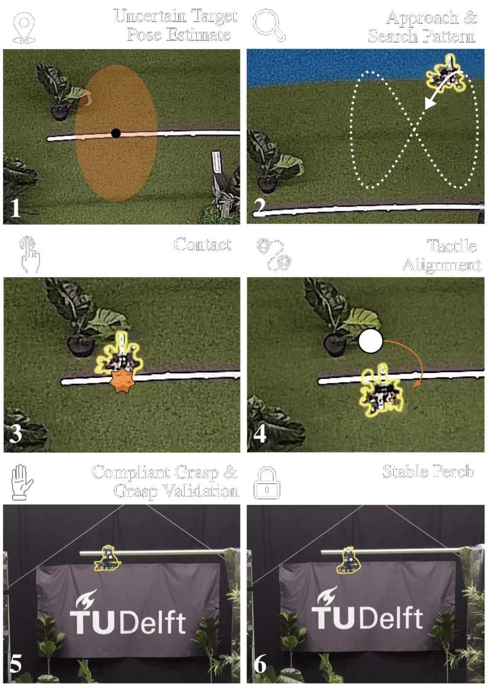
The resulting behavior on hardware
State machine and resulting procedure. Left: transitions are driven purely by contact events and pose convergence. Right: the corresponding behavior of the physical prototype — (1) an uncertain target pose estimate, (2) approach and search pattern, (3) first contact, (4) tactile alignment, (5) compliant grasp and grasp validation, (6) a stable perch with the motors off.
In TAKEOFF the MAV climbs to a hover above the origin. In SEARCH it follows a vector field \(\vect{g}(\vect{p}_\mathcal{B}, \vect{p}_{\mathcal{T},0}, t)\) around the initial estimate while a second command \(\vect{s}\) slowly opens and closes the fingers, so that the hand reaches its widest opening at the apexes of the pattern — this enlarges the swept volume and with it the chance of a touch. The first contact triggers TOUCHED, where the MAV uses the contact location to form an initial target estimate and retreats below and away from it with the hand fully open. APPROACH and POSITION then bring the vehicle underneath and onto the estimate.
ROTATE is where the tactile alignment happens: the fingers close incrementally to provoke contact, fingers that report contact stop closing, and the MAV yaws away from them until the contact disappears, applying small lateral corrections when contact is unilateral. Because the closing commands increase monotonically — fingers never reopen — the process is guaranteed to converge to a fully closed grasp. Once every finger reports consistent contact, FINALIZE drives all fingers closed and validates the grasp by checking that all bottom pads are active and the tendon tensions have equalized. Only then does the MAV enter the terminal PERCHED state and turn off its motors. From any state, a tracking error beyond \(\epsilon_\mathrm{abort}\) sends the vehicle to ABORT, from which it re-enters the search.
Deliberate contact also disturbs the vehicle. Rather than controlling interaction forces, we bound the approach velocity so that the worst-case disturbance stays within what the attitude controller can reject. For contact at maximum moment arm \(r_{\max}\) with the velocity aligned to the contact normal, $$ \begin{align} \tau_{\max} \approx r_{\max}\,\frac{m v}{\Delta t}, \end{align} $$ with \(m\) the vehicle mass and \(\Delta t\) the impact duration. Keeping \(\tau_{\max}\) below the controller's rejectable torque yields a search velocity of \(1.0\,\)m/s; the compliance of the fingers makes this bound conservative in practice.
Choosing a Search Pattern
Finding the target is a coverage-path problem, and the pattern trades mean time-to-contact against tolerance to large pose uncertainty. A larger pattern finds targets further from the estimate but takes longer, so the pattern should be matched to the expected uncertainty. We compare a sinusoidal, a spiral, and a square raster scan. The sinusoidal pattern is a smooth, dynamically feasible approximation of the optimal boustrophedonic (zigzag) sweep: unlike the square raster it covers the interior of the region rather than its perimeter, and unlike the spiral — which revisits intermediate radii and reaches large offsets slowly — it expands outward quickly. We therefore adopt the sinusoidal pattern, executed as a height-stepping figure-eight that gains altitude after each completed cycle.
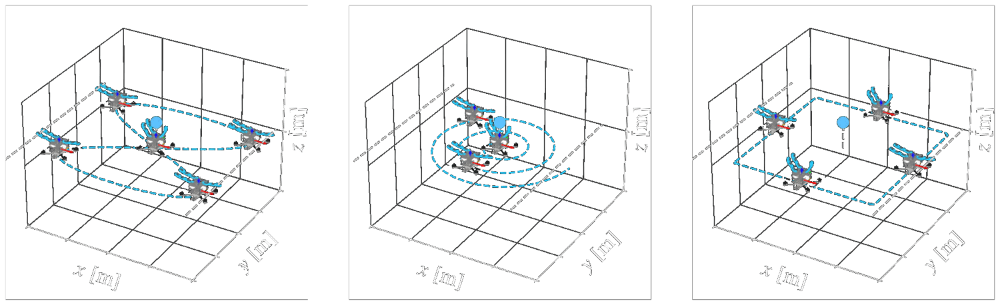
The three search patterns considered: sinusoidal (left), spiral (middle), and square raster scan (right). Each represents a different trade-off between coverage efficiency and robustness to pose uncertainty.
Results
Robustness in Simulation
We quantify robustness with a Monte-Carlo study in the Genesis simulator, which builds a dynamic model from the URDF of the MAV and the gripper; we add tendon actuation and joint stiffness on top, and feed the cascaded position, attitude, and rate controllers noisy measurements matching a motion capture system (\(\sigma = 2\,\)cm in position, \(1^\circ\) in orientation). Each configuration is run for 100 trials, with the MAV starting from a uniformly sampled position over a \(2\,\mathrm{m} \times 2\,\mathrm{m}\) area. The baseline is a feed-forward strategy that approaches the initial estimate from below and closes the hand on arrival, using no feedback at all.
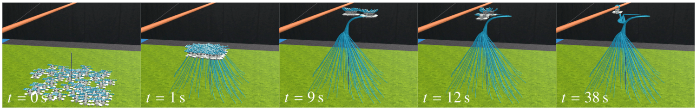
Still frames of 100 simultaneous trials of a single experiment, at \(t = 0,\,1,\,9,\,12\) and \(38\,\)s — starting, lifting off, searching, approaching, and grasping.
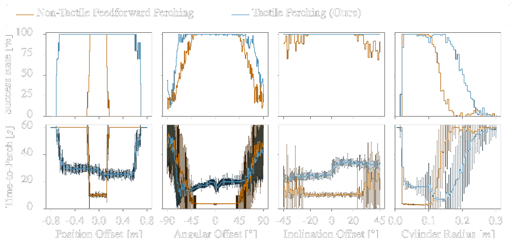
Success rate and mean time-to-perch with standard deviation, comparing the feed-forward baseline (orange) with tactile perching (blue), swept over positional offset, yaw offset, target inclination, and target radius.
Table I — Range over which each method sustains a success rate above 99 %, from 100 Monte-Carlo trials per configuration.
| Swept quantity | Feed-forward baseline | Tactile perching (ours) |
|---|---|---|
| Position offset | ± 0.1 m | ± 0.6 m |
| Yaw offset | ± 45° | ± 60° |
| Target inclination | ± 45° (degrading above 30°) | ± 45° |
| Target radius | 0.02 – 0.10 m | 0.02 – 0.15 m |
Tactile perching widens the admissible position error by roughly a factor of six and the tolerable target radius by 50 %. The price is time: within the narrow band where the baseline works at all, searching for the target nearly doubles the time-to-perch. Two results are worth reading carefully. Below a radius of 2 cm both methods fail — not because the hand cannot envelop the target, but because such a thin target does not activate enough pads for the grasp validation to accept the perch. And the inclination sweep is the one case where touch adds nothing: the underactuated gripper alone already handles inclinations up to 45°, because each finger contacts the target with a different phalanx and adapts, pulling the MAV underneath for a stable perch.
A Monte-Carlo experiment: 100 trials with randomized initial positions running simultaneously, from takeoff through the search pattern to the grasp.
Versatility of the Passive Grasp
Because each finger is a chain of three parallel revolute joints, the hand conforms to whatever it closes around. It supports the full weight of the MAV while hanging from a human arm, tree branches of different diameters, rectangular wooden beams, a structural T-beam, and even a traffic cone — an object with a continuously varying diameter and a low-friction plastic surface. In each case a different phalanx becomes the main contact point and a different torsional spring carries the load, with the fingers compressing until the contact force balances the spring torque. No actuation, and therefore no power, is involved.
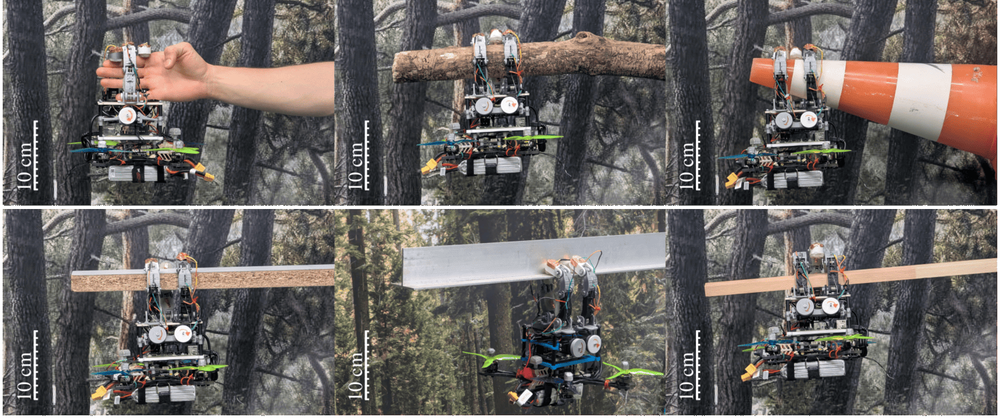
The compliant hand supporting the MAV's full weight on structures of different diameter, shape, and surface material — a human arm, branches, wooden beams, a traffic cone, and a metallic T-beam.
Flight Experiments
We flew 26 trials with the physical prototype, spanning cylindrical and T-bar targets and a range of deliberately corrupted target estimates: pure position offsets up to 0.6 m, yaw offsets up to 20°, target inclinations up to 30°, and combinations of the two. All 26 trials perched successfully, at a mean time-to-perch of 47 s (44 s on the cylinder, 53 s on the T-bar). The spread in duration comes almost entirely from the search phase, whose length depends on where the drone took off and how wrong the initial estimate was.
Table II (a) — Cylindrical target
| Trial | x (m) | y (m) | θ (°) | Time (s) | |
|---|---|---|---|---|---|
| No Offset 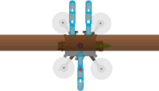 | I | 0.0 | 0.0 | 0.0 | 43.0 |
| II | 0.0 | 0.0 | 0.0 | 46.0 | |
| III | 0.0 | 0.0 | 0.0 | 35.0 | |
| IV | 0.0 | 0.0 | 0.0 | 33.0 | |
| Rotational Offset 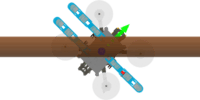 | V | 0.0 | 0.0 | 12.5 | 33.5 |
| VI | 0.0 | 0.0 | −12.5 | 43.4 | |
| VII | 0.0 | 0.0 | 20.0 | 52.0 | |
| VIII | 0.0 | 0.0 | −20.0 | 48.0 | |
| Positional Offset 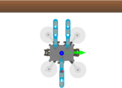 | IX | −0.25 | 0.0 | 0.0 | 32.0 |
| X | 0.25 | 0.0 | 0.0 | 38.0 | |
| XI | −0.6 | 0.0 | 0.0 | 37.0 | |
| XII | 0.6 | 0.0 | 0.0 | 73.0 | |
| Inclination Offset 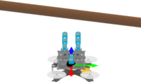 | XIII | 0.0 | 0.0 | 10.0 | 51.2 |
| XIV | 0.0 | 0.0 | −10.0 | 60.1 | |
| XV | 0.0 | 0.0 | 30.0 | 40.0 | |
| XVI | 0.0 | 0.0 | −30.0 | 45.4 | |
| Combined Offset 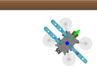 | XVII | −0.25 | −0.25 | 15.0 | 41.0 |
| XVIII | −0.25 | −0.25 | 15.0 | 42.0 |
Table II (b) — T-Bar target
| Trial | x (m) | y (m) | θ (°) | Time (s) | |
|---|---|---|---|---|---|
| No Offset 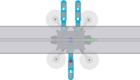 | XIX | 0.0 | 0.0 | 0.0 | 70.0 |
| XX | 0.0 | 0.0 | 0.0 | 58.3 | |
| XXI | 0.0 | 0.0 | 0.0 | 68.8 | |
| XXII | 0.0 | 0.0 | 0.0 | 56.1 | |
| Positional Offset 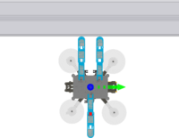 | XXIII | −0.25 | 0.0 | 0.0 | 60.5 |
| XXIV | 0.25 | 0.0 | 0.0 | 44.2 | |
| XXV | −0.6 | 0.0 | 0.0 | 30.0 | |
| XXVI | 0.6 | 0.0 | 0.0 | 37.9 |
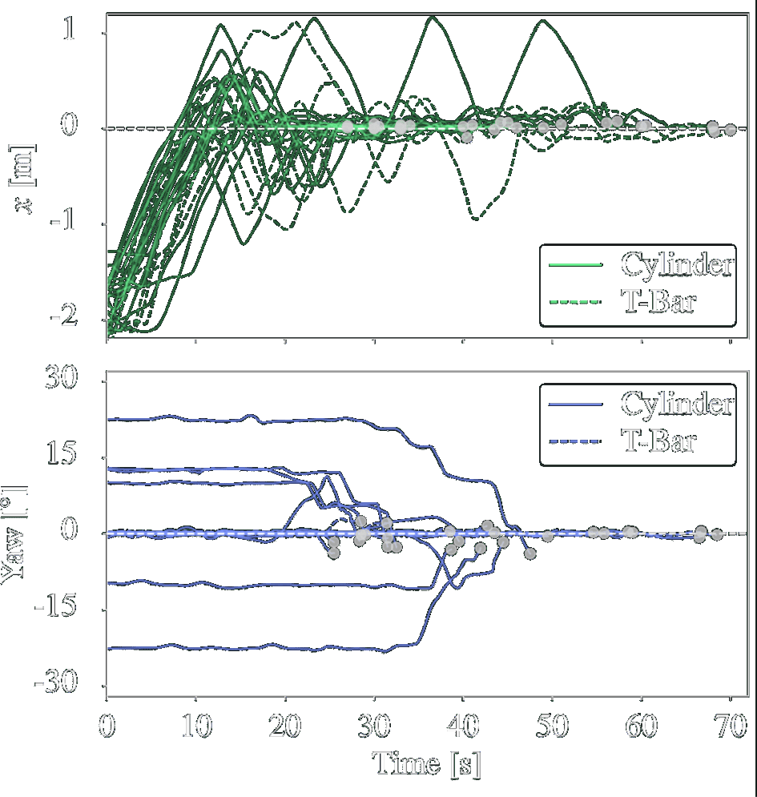
Time series of the MAV's \(x\) position and yaw angle for all 26 trials on the cylinder (solid) and the T-bar (dashed), normalized so that the target pose sits at the origin and the approach happens along the \(x\)-axis. Every trial converges to the target pose; the dots mark the moment the perching state is reached. In the tables, \(\theta\) denotes yaw for the rotational and combined groups, and target inclination for the inclination group; trials in bold are the ones shown in 3D below.
The 3D trajectories show where the variance comes from. In trial III the MAV happens to make contact during its initial approach and aligns almost immediately; in trial XI, launched with a 0.6 m offset, it flies several passes of the search pattern before the first touch and aligns correspondingly later. In all cases the trajectory converges onto the target.
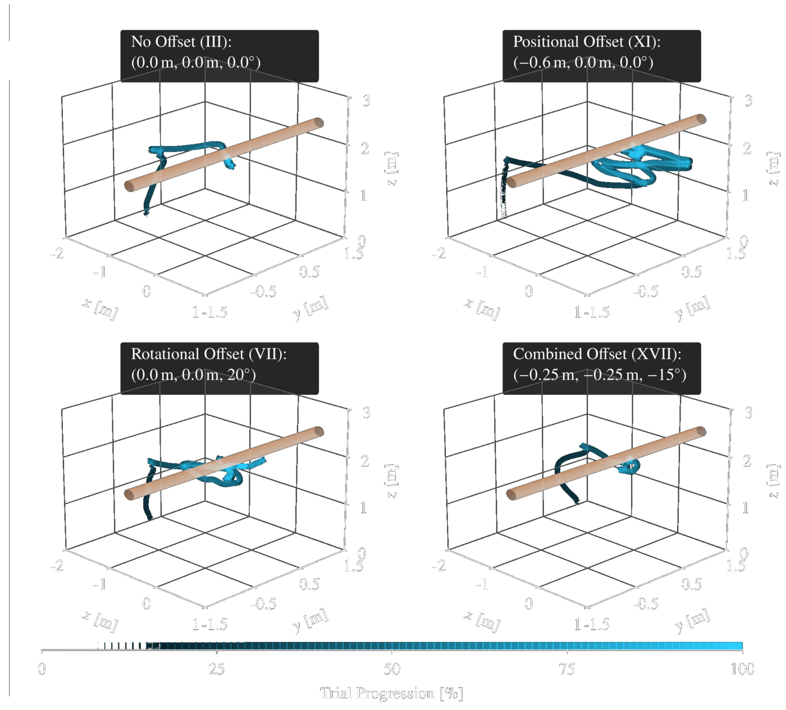
Three-dimensional trajectories of four selected trials, colored by progression through the trial. Different takeoff positions and initial offsets lead to contact at different times, but every case aligns with and perches on the target.
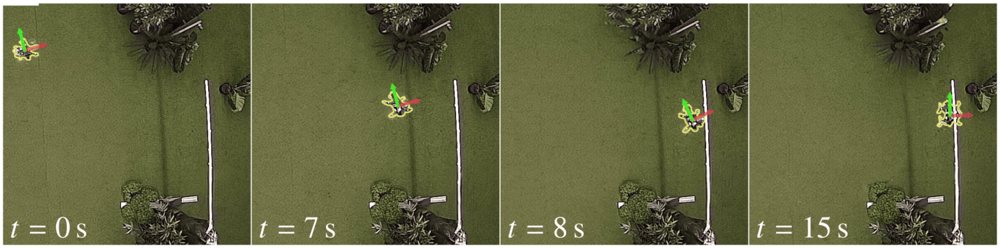
Top-down snapshots of trial XIII, showing the phases of the tactile perching maneuver.
A single trial makes the mechanism explicit. In trial III the MAV takes off, then sweeps the search pattern while cycling its fingers open and closed. A single contact at \(t = 15\,\)s ends the search; the vehicle drops below the contact, approaches, positions itself underneath, and starts aligning rotationally. During finalization all fingers close, sufficient contact accumulates at around \(t = 32\,\)s, a stable grasp is confirmed, and the perch state is entered — at which point the motors go off.
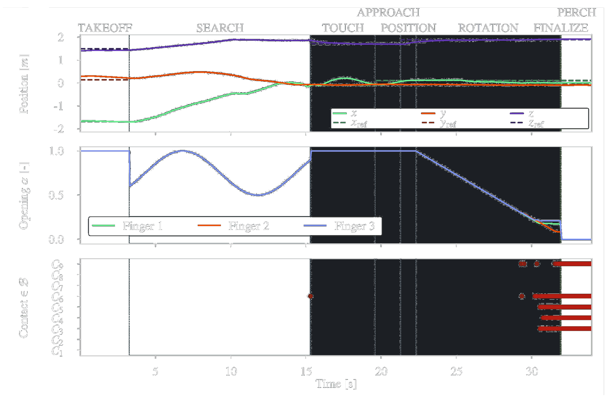
Full overview of trial III: MAV position, finger opening states, and the nine contact signals across the phases of the maneuver. The shaded bands mark the state machine's states.
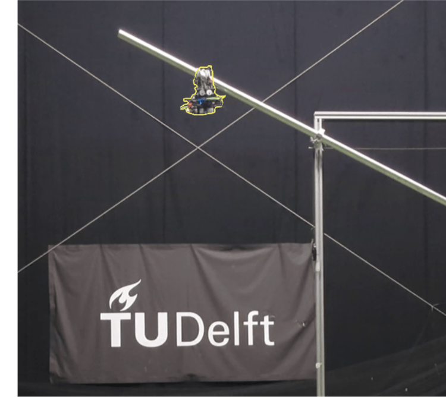
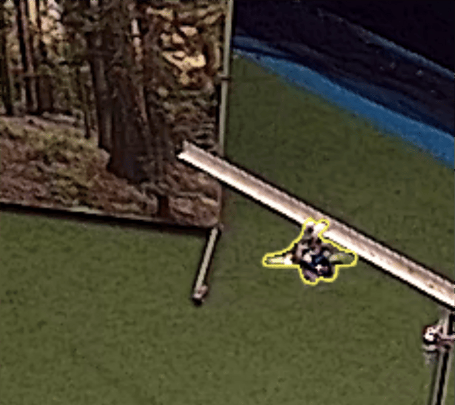
Perched on a steeply inclined cylindrical target (trial XV, left) and on the T-bar (trial XX, right). Compliance in the fingers absorbs the inclination, so the same maneuver works on both.
Left: a close-up of the tactile perching procedure. Right: a top-down view of the maneuver in the flight arena.
Limitations
The procedure inherits its assumptions as failure modes. An initial offset far outside the search pattern violates A.1 and the search never finds the target; a target too large for the hand violates A.2 and the grasp never closes; unexpected obstacles near the estimate violate A.3 and generate contacts that derail the alignment. In a fully integrated system these would be checked by an operator or by an onboard perception system. One subtler failure occurs right at the edge of the reliable positional range: the distal phalanx can catch on top of the target and block the MAV from moving underneath it. This is detectable — the control error in TOUCHED and APPROACH gives it away — and the vehicle can restart the approach from the abort state.
Conclusion
Embedding tactile receptors in a compliant, passively closing anthropomorphic hand lets an aerial robot perch on structures it cannot see and does not know precisely. Touch supplies exactly the feedback that vision loses at the moment of capture: where the target actually is, how the vehicle is aligned to it, and whether the grasp will hold. In simulation this sustains success rates above 99 % across pose errors up to 0.6 m and 60°; on hardware it perched in all 26 trials on two different target geometries. More broadly, the result argues for treating contact as informative feedback in the task space rather than as a disturbance to be avoided — a paradigm that extends well past perching into aerial physical interaction at large.
BibTeX
The website template was adapted from John Barron and Michaël Gharbi.